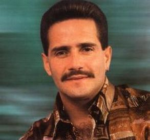
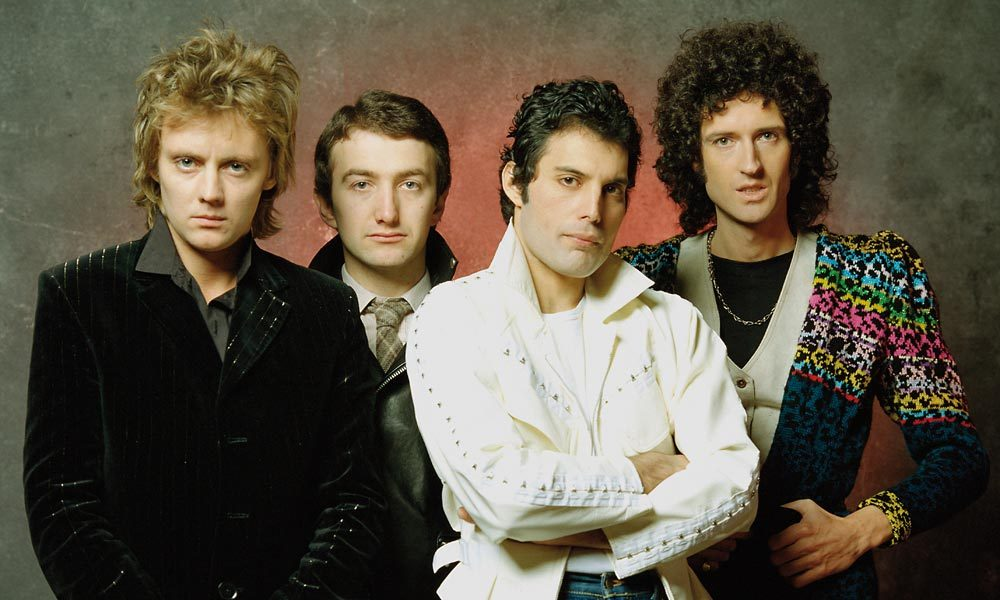
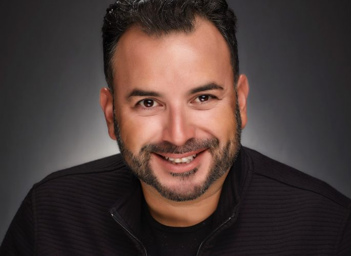

Fue un músico, cantante, compositor y director musical, de salsa caribeña o latinoamericana, estadounidense de ascendencia puertorriqueña. Es uno de los más grandes exponentes de la salsa, en especial de la salsa romántica. Su carisma en el escenario, estilo, personalidad e inconfundible voz hizo que se ganara el cariño y el respeto de la gente. Y que su carrera brillara en las décadas de 1970, 1980 y 1990, dejando una gran huella en la música latina.
Queen es una banda británica de rock formada en 1970 en Londres por el cantante y pianista Freddie Mercury, el guitarrista Brian May y el baterista Roger Taylor. El bajista John Deacon llegaría un año después al grupo para completar la formación clásica. Tras el deceso de Mercury en 1991, y el retiro de Deacon en 1997, los integrantes restantes, Brian May y Roger Taylor, continúan trabajando bajo el nombre Queen o Queen, por lo que la banda aún se considera activa.
Es un rapero, cantante, compositor y actor puertorriqueño. Es considerado uno de los pilares del reguetón, por sus letras sociales, esencias afro-caribeñas y sus clásicos en la década de los 2000. También es considerado como el Papá del reguetón, por ser el primer artista de la historia del reguetón que dio a conocer ese género musical a nivel mundial gracias a su álbum El abayarde y el primero que lo hizo nacer. Es uno de los artistas más respetados e influyentes en el género urbano latino. Artistas influyentes como J Balvin, Rauw Alejandro, Residente, Don Omar entre otros, mencionan su nombre en algunos sencillos como homenaje a su trayectoria artística.

Este intérprete de merengue y bachata tuvo también durante su niñez como influencias musicales a figuras del calibre de Tony Croatto y Menudo. Con sus amistades en la escuela, Joseph también entonaba melodías por los pasillos y llegó a formar un grupo, para “tocar rock de Los Beatles... y terminamos haciendo merengue”. Siempre le entusiasmó la música disco, la americana y el rock de los ’80.
fue un cantante y compositor jamaicano. Durante su carrera musical fue el líder, compositor y guitarrista de las bandas The Wailers (1964-1974) y Bob Marley & The Wailers (1974-1980). Marley sigue siendo el más conocido y respetado intérprete de la música reggae y es acreditado por ayudar a difundir tanto la música de Jamaica como el movimiento rastafari (del que era un miembro comprometido) a una audiencia mundial.